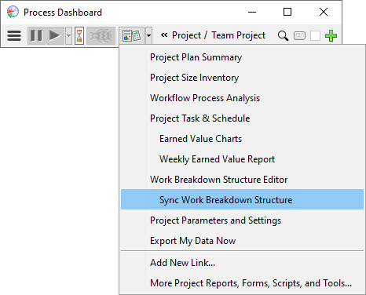
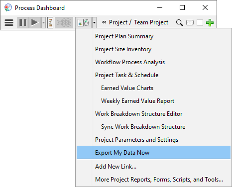

The Team Dashboard uses a peer-to-peer architecture to share data and facilitate collaboration. This unique approach offers a number of benefits:
These benefits are possible because your Process Dashboard includes a standalone database of personal metrics that is distinct from the Team Dashboard database. But since the databases are distinct, it becomes necessary to copy data back and forth periodically. These copies are performed by sync and export operations.
The Work Breakdown Structure offers an easy-to-edit view of the consolidated team plan. If you open the WBS from your personal dashboard and save changes, those changes will be applied to your plan automatically.
Personal plan ownership is important for a high-maturity team, so the dashboard won't modify your personal plan without your knowledge. If another member of your team makes a change to the WBS that affects you, you'll need to pull these changes into your plan. You can request these changes by performing a Sync Work Breakdown Structure operation.
If your team is using cloud storage for team data, make sure your cloud provider's sync client is running and active. The sync client needs to copy the latest WBS data from the cloud before you can ask the Process Dashboard to sync those changes into your personal plan.
In the Process Dashboard, click the script button and choose Sync Work Breakdown Structure.

If your plan is up-to-date, you'll see a message to that effect. Otherwise, wait while the dashboard copies data from the team plan. When the operation is complete, the dashboard will display a list of the plan changes that were made.

The Sync operation updates the plan for the currently selected project. If you're a member of more than one project, you can sync the other projects by changing the active task and choosing Sync Work Breakdown Structure again.
The project data you collect is written in real-time into the database in your personal dashboard. But it isn't immediately available for team rollups and reports. Instead, it is published to the Team Dashboard in the background:
If you've collected data and you'd like to make it available for team reports immediately, you can perform an Export My Data Now operation.

The Export operation publishes data for the currently selected project. If you're a member of more than one project, you can export data for the other projects by changing the active task and choosing Export My Data Now again.
If your team is using cloud storage for team data, make sure your cloud provider's sync client is running and active. Your data isn't fully exported until the sync client reports that all files are published and up-to-date.